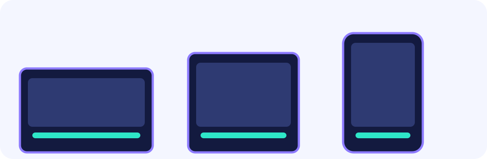

Input Buffer
On any button press, store the move type in buffer and set bufferLife = 8. Each frame, decrement the life; when it hits zero, clear the buffer. The 8-frame window ≈ 133 ms of forgiveness.
buffer = light; bufferLife = 8
★★★☆☆ / PLAYABLE
Store a slightly early button press in an 8-frame buffer. When the current move hits and enters its cancel window, immediately start the buffered move. That handoff is how fighting-game combos chain together.
FIRST-TIME READER
Find where this one line is used, then follow how its value changes on screen. This is the shared Update → Draw skeleton for the whole path; the numbered steps below add one system at a time.
ONE RULE TO TRACE
Match the explanation to this line, then test the change in the game.
if frame>=8 && frame<=15 { acceptBufferedMove() }This track still runs on the LEVEL 01 Update → Draw loop—each step adds one new piece.

PLAYABLE / WEBASSEMBLY
J/Z for light attack, K/X for heavy (or tap left/right buttons). Complete the light→light→heavy 3-hit combo three times to clear.
DEEP DIVE / COMBO CANCEL
Two systems work together. An input buffer stores the most recently pressed button for up to 8 frames, so pressing slightly early is not wasted. A cancel window (frames 8–13) opens when the current move hits — during this window, the move's recovery is skipped and the buffered move starts immediately. Thread both correctly and the combo flows.
On any button press, store the move type in buffer and set bufferLife = 8. Each frame, decrement the life; when it hits zero, clear the buffer. The 8-frame window ≈ 133 ms of forgiveness.
buffer = light; bufferLife = 8
Frames 8–13 (six frames) define the cancel window. If the buffer holds the expected next move during this range, the current move is cancelled and the next begins immediately.
cancel := frame >= 8 && frame <= 13
The combo integer tracks which hit in the sequence is next. Hits 1 and 2 require light; hit 3 requires heavy. Using the wrong move resets the counter to zero.
if combo < 2: expect light; else: heavy
TRY IT / LAB
Remember an early press for a few frames, then spend it in the cancel window.
A slow-motion model of the real game rule.
TRY IT · GO
buffer, life = "light", 8 if life > 0 { life-- } else { buffer = "none" } if cancelWindow && buffer != "none" { start(buffer) }
—
COMBO TIMING
buffer lasts: 8 frames (≈ 133 ms forgiveness)
move lengths
LIGHT: 20 frames (startup 8 + active 1 + recovery 11)
cancel available: frames 8–13 (on hit)
HEAVY: 28 frames (startup 8 + active 1 + recovery 19)
The cancel window opens the moment the active frame lands (frame == 8) and stays open until frame 13. If the buffer is empty by then, the current move plays to full recovery and the combo ends. Press the next button any time before the window closes and the buffer handles it.
IN THE REAL GAME
Each frame: decrement the buffer lifetime, then check cancel conditions. When cancel is true and the buffer matches the expected move, call g.start() to interrupt recovery and begin the next move immediately.
// store input in buffer
if in != none {
g.buffer = in
g.bufferLife = 8
}
if g.bufferLife > 0 {
g.bufferLife--
} else {
g.buffer = none
}
// cancel: 6-frame window starting on the hit frame
cancel := g.frame >= 8 && g.frame <= 13
if cancel && g.buffer != none {
expected := light
if g.combo >= 2 { expected = heavy }
if g.buffer == expected {
g.start(g.buffer) // skip recovery, begin next
}
}WITHOUT BUFFER
Without a buffer, the cancel window is a one-frame target. Virtually impossible for a human at 60 fps — combos become a frustrating technical barrier instead of an expressive tool.
WITH BUFFER
An 8-frame buffer lets players press in rhythm rather than on exact frames. The game feels responsive, and skilled players can tighten their timing without the system fighting them.
YOUR FIRST TUNING
Set bufferLife = 16 for beginner-friendly combos or 4 for a strict competitive feel. Narrow the cancel range from frames 8–13 to 8–10 to demand tighter timing from advanced players.
FEEDBACK